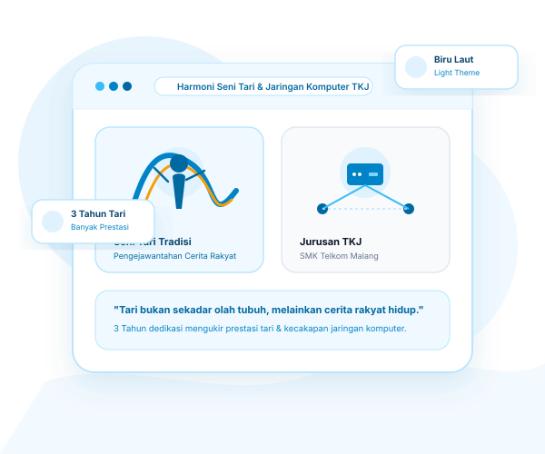

Selamat Datang,
Aku Meme!
Halo semuanya! Selamat datang di website portofolio pribadi saya. Perkenalkan, nama saya Zaescia Putrisuta Rizkiillahi, biasa dipanggil MEME. Saat ini saya berusia 16 tahun dan sedang menempuh pendidikan di SMK Telkom Malang pada jurusan Teknik Komputer dan Jaringan (TKJ), dengan hobi mendalam pada seni tari cerita rakyat.
16 Tahun
Usia Saat Ini
TKJ
SMK Telkom Malang
3 Tahun
Menari & Berprestasi

Zaescia Putrisuta R. (Meme)
Siswi TKJ • Penari Tradisional
Dua Dunia yang Ditekuni Meme
Harmoni antara kecakapan rekayasa teknologi jaringan komputer dan kelembutan ekspresi tari tradisional.
Teknik Komputer dan Jaringan (TKJ)
Di SMK Telkom Malang, Meme mempelajari konfigurasi jaringan komputer, arsitektur topologi kabel dan nirkabel, administrasi server, serta logika sistem transmisi data. Melatih cara berpikir terstruktur, analitis, dan adaptif terhadap perkembangan teknologi.
Seni Tari & Cerita Rakyat
Menari bagi Meme bukan sekadar gerak olah tubuh biasa, melainkan media penyampaian cerita rakyat yang dimainkan dengan rasa dan penjiwaan manusia. Selama 3 tahun menekuni tari, Meme telah mempersembahkan karya pada berbagai panggung dan meraih ragam prestasi.
"Tari Adalah Cerita Rakyat Hidup yang Dimainkan dengan Manusia."
Kisah-kisah rakyat nusantara yang kaya akan nilai kearifan hidup diwariskan kembali lewat gerak ritmis dan kostum tradisi. Melalui perpaduan ilmu TKJ dan seni tari, Meme membuktikan bahwa generasi muda dapat menguasai kecanggihan digital sekaligus melestarikan budaya adiluhung bangsa.

Mau Tau Lebih Dekat Kegiatan Meme?
Kalian bisa langsung membuka akun Instagram resmi @suguuuss_1201 atau TikTok @permensuguss1 untuk melihat karya tari dan aktivitas keseharian saya!